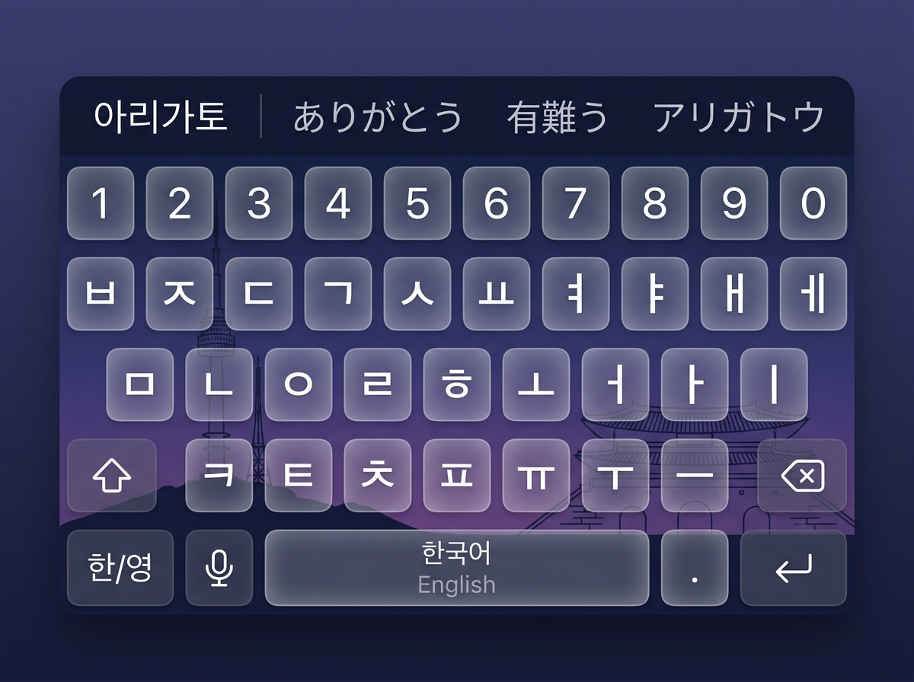
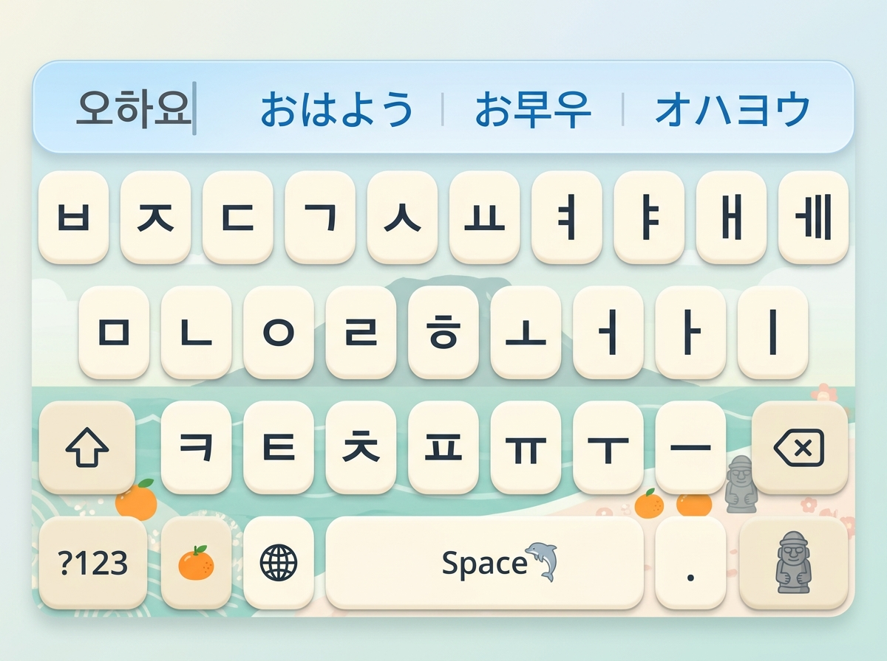
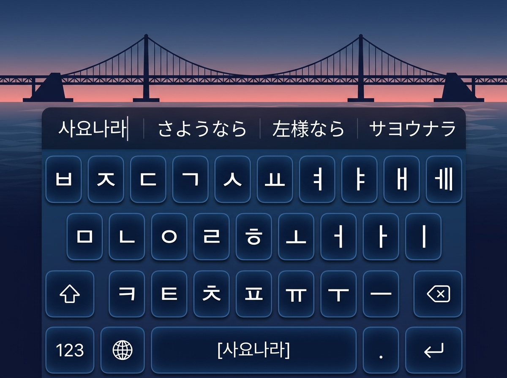
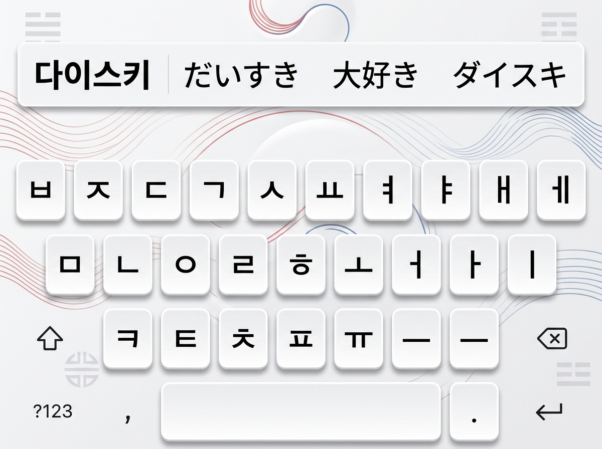
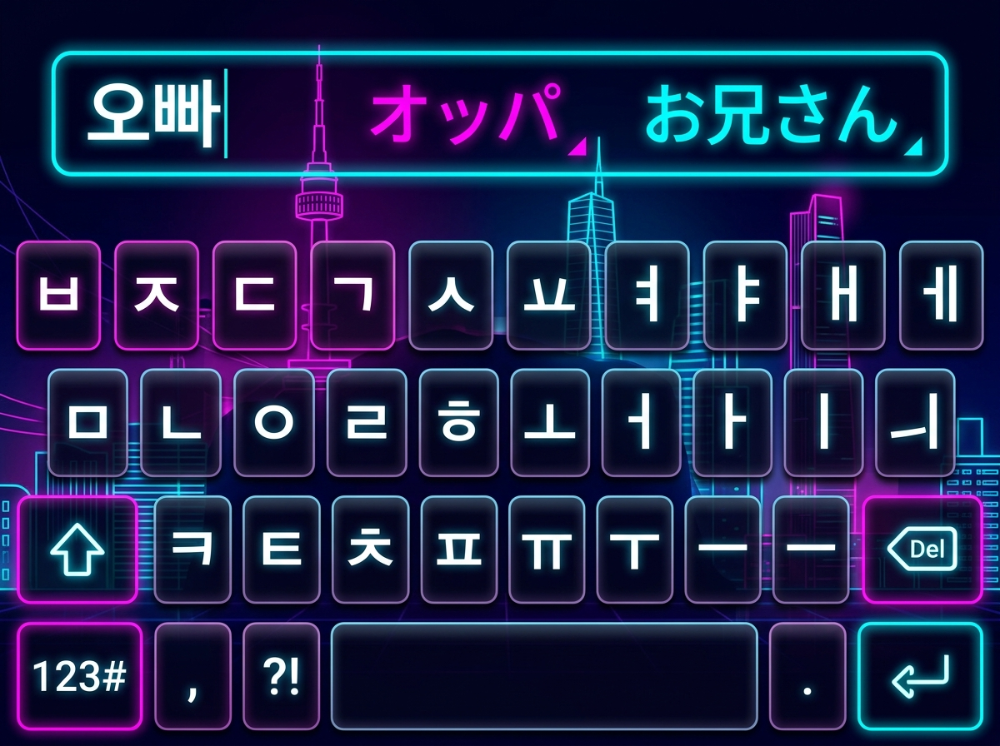
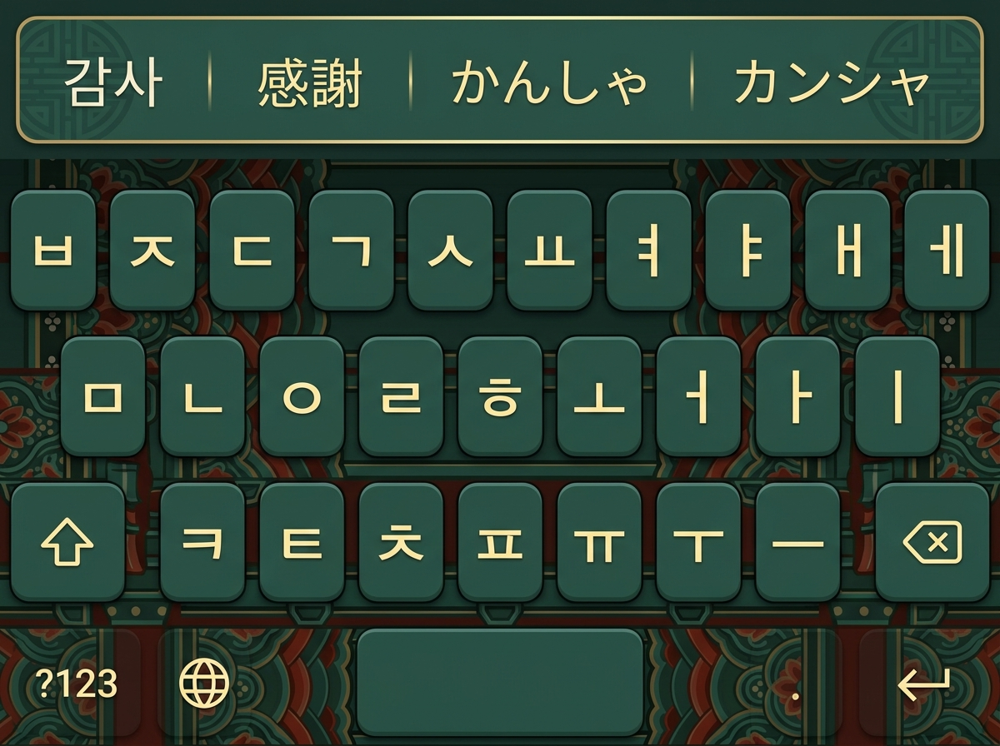
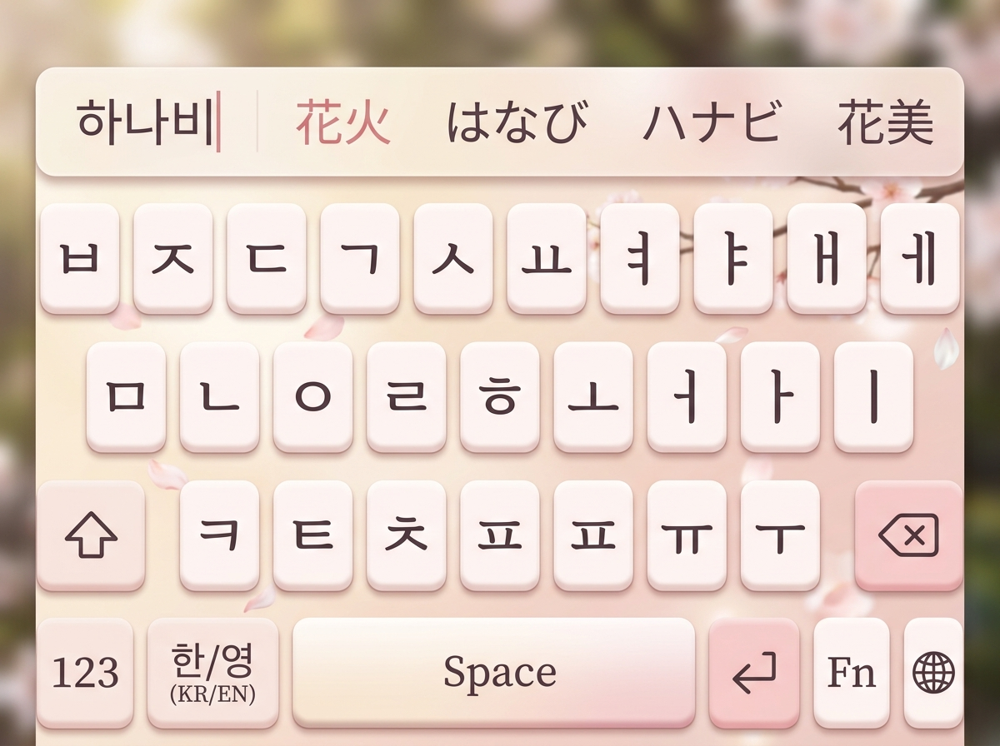
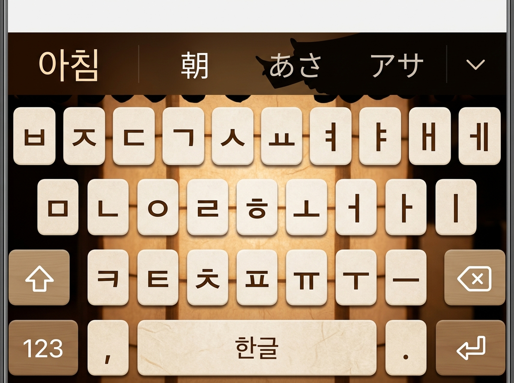

기획서 01_키보드 기능 및 테마 명세에 맞춰 생성된 실물 키보드 디자인 시안입니다.
폴더 위치: D:\Github\KKKeyboard\design_mockups

남산서울타워와 경복궁의 은은한 실루엣, 미드나잇 퍼플 반투명 프로스테드 글래스 키캡

청량한 에메랄드 바다, 한라산 실루엣, 감귤 & 돌하르방 포인트와 따뜻한 아이보리 키캡

광안대교 실루엣과 밤바다의 딥블루 오션, 선셋 코랄 포인트와 높은 가독성의 키캡

한국 전통 백자의 단아한 화이트 세라믹 질감, 건곤감리 음영과 절제된 태극 곡선

K-pop & 사이버펑크 감성의 일렉트릭 네온 와이어프레임과 발광 테두리 다크 아크릴 키캡

궁궐 처마의 전통 단청 공예 패턴, 매트 청록 키캡과 고급스러운 골드 폰트 대비

흩날리는 벚꽃 잎과 따스한 봄 햇살, 포근한 로즈 블러시 파스텔 키캡

한옥 처마의 유려한 곡선 실루엣과 온화한 한지 조명 텍스처, 우드 브라운 키캡